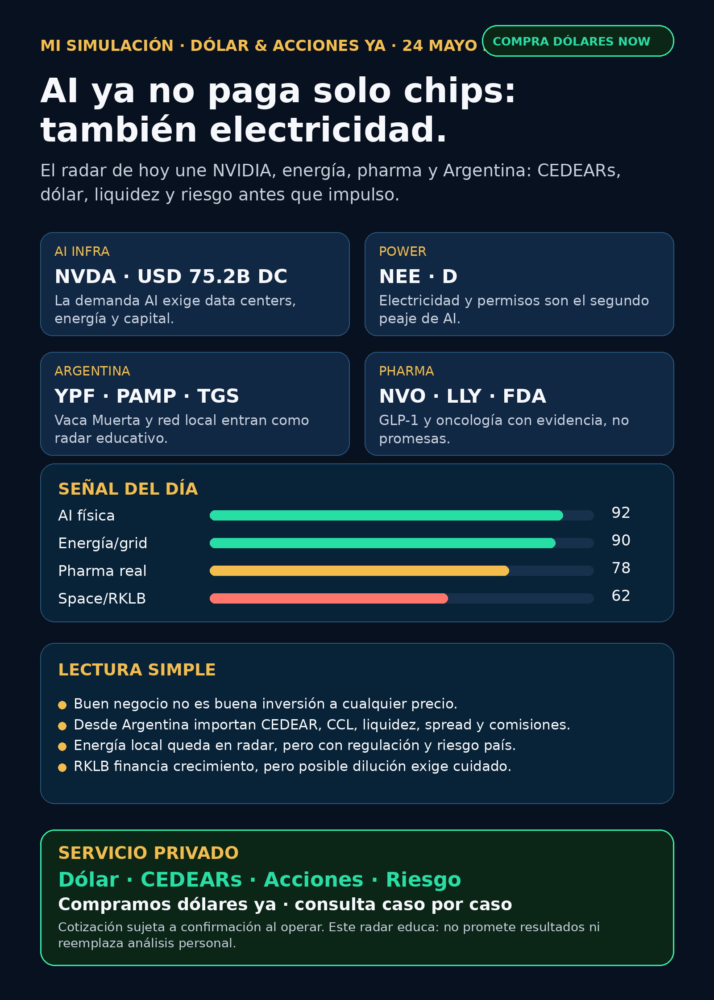

Simulación Uno Finanzas · Newsletter WhatsApp · 24 mayo 2026
Dólar & Acciones YA!
AI ya no paga solo chips: también electricidad, data centers y capital. Versión Argentina: CEDEARs, MEP/CCL, liquidez y riesgo antes que impulso.
COMPRAMOS DÓLARES YAServicio privado por mensaje. Cotización sujeta a confirmación al momento de operar.

Escuchalo en 2 minutos
Audio descriptivo de Lola
Resumen hablado para WhatsApp: tesis, señales, riesgos y qué mirar desde Argentina.
Links útiles
## Lectura simple del día
La señal fuerte de hoy es que la inteligencia artificial dejó de ser solo una historia de chips. NVIDIA confirma demanda enorme de data centers, pero también deja a la vista el cuello de botella físico: electricidad, edificios, red, capital y permisos.
Para una persona en Argentina, eso se mira con doble pantalla:
- Afuera: chips, data centers, cloud, utilities, pharma y space.
- Acá: dólar MEP/CCL, CEDEARs, liquidez, spread, comisiones, energéticas locales y riesgo regulatorio.
En criollo: una buena empresa no siempre es buena inversión al precio actual, y un buen activo afuera no siempre es un buen instrumento para una cartera argentina.
## Tesis central
La IA necesita tres cosas al mismo tiempo:
1. **Cerebro:** GPUs, memoria, foundries, litografía y software.
2. **Cuerpo:** data centers, electricidad, transmisión, cooling y capital.
3. **Instrumento correcto:** desde Argentina, CEDEAR, ADR, acción local, bono, ETF o dólar financiero no son lo mismo.
Por eso el radar de hoy no es “comprá AI”. Es: estudiar AI como infraestructura física y mirar qué parte de esa cadena tiene mejor evidencia, mejor instrumento y riesgo entendible.
## Señales educativas de hoy — orden de radar, no orden de compra
### 1) NVIDIA / AI infra — señal fortalecida
NVIDIA reportó en su 10-Q Q1 FY2027 ingresos totales por USD 81.615B, Data Center revenue de USD 75.246B y compromisos de manufactura, supply y capacity por USD 119B. La parte más útil para este radar: la compañía advierte que la disponibilidad de data centers, energía y capital puede afectar el crecimiento de infraestructura AI.
- Estado: señal fortalecida para AI infra.
- Riesgo: valuación, concentración, capex, supply chain y dependencia de energía/data centers.
- Fuente: https://www.sec.gov/Archives/edgar/data/1045810/000104581026000052/nvda-20260426.htm
### 2) Energía global — la electricidad como segundo peaje de AI
NextEra/Dominion aparecen como señal fuerte porque la narrativa se mueve desde chips hacia power. En filings SEC vinculados al deal, NextEra presenta la combinación como crecimiento para entregar más electricidad; también destaca la experiencia de Dominion en construcción para data centers y menciona aprobaciones regulatorias estimadas en unos 18 meses.
- Estado: seguimiento fuerte, no recomendación.
- Riesgo: accionistas, HSR, FERC, NRC, comisiones estatales y timing regulatorio.
- Fuentes: https://www.sec.gov/Archives/edgar/data/753308/000110465926064528/tm2614888d8_425.htm y https://www.sec.gov/Archives/edgar/data/715957/000119312526235041/d131585d8k.htm
### 3) Argentina energía — Vaca Muerta entra por radar educativo
Para Argentina, energía no es una nota al pie. YPF, Pampa Energía, TGS, Central Puerto, Edenor y Transener quedan en radar educativo por gas, generación, transmisión, tarifas, Vaca Muerta y riesgo regulatorio. Buenos Aires Times reportó nuevos proyectos/inversiones alrededor de Vaca Muerta, con menciones a YPF, Vista y Pampa.
- Estado: radar local educativo.
- Riesgo: fuente secundaria para algunos proyectos; antes de elevar a candidato hace falta fuente corporativa primaria, precio, liquidez e instrumento concreto.
- Fuente: https://www.batimes.com.ar/news/opinion-and-analysis/vaca-muerta-promises-flood-of-dollars-insuring-argentinas-next-president-against-any-currency-crisis.phtml
### 4) Pharma / salud — GLP-1 y oncología con evidencia real
Novo Nordisk tuvo señales regulatorias positivas: CHMP recomendó aprobación europea para Wegovy 7.2 mg en single-dose pen y para Wegovy oral/semaglutide. FDA aprobó Datroway para cáncer de mama triple negativo metastásico/unresectable, con datos de PFS y OS publicados. También apareció una warning letter de FDA sobre semaglutide API/relabeling, recordatorio de que el mercado GLP-1 tiene riesgo de calidad, fabricación y regulación.
- Estado: salud en radar real, no humo.
- Riesgo: competencia Novo vs Lilly, precio, side effects, supply, patentes y regulación.
- Fuentes: https://www.sec.gov/Archives/edgar/data/353278/000117184326003645/f6k_052226.htm ; https://www.sec.gov/Archives/edgar/data/353278/000117184326003634/f6k_052226.htm ; https://www.fda.gov/drugs/resources-information-approved-drugs/fda-approves-datopotamab-deruxtecan-dlnk-unresectable-or-metastatic-triple-negative-breast-cancer ; https://www.fda.gov/inspections-compliance-enforcement-and-criminal-investigations/warning-letters/harbin-jixianglong-biotech-co-ltd-723330-05012026
### 5) Space / RKLB — tesis viva, riesgo de dilución
Rocket Lab presentó un 8-K por un equity distribution agreement para vender acciones por hasta USD 3B vía ATM/forward arrangements.
En criollo: puede juntar caja para financiar crecimiento y Neutron, pero también puede diluir al accionista. La torta se reparte entre más acciones.
- Estado: tesis mixta; seguimiento, no compra automática.
- Riesgo: dilución, ejecución, contratos, cash burn y volatilidad de space.
- Fuente: https://www.sec.gov/Archives/edgar/data/1819994/000181999426000045/rklb-20260520.htm
## Watchlist base Mi Simulación — seguimiento rápido
- **NVDA:** señal fortalecida por 10-Q y data center scale. Mirar energía/capex además del chip.
- **RKLB:** señal mixta: financiación posible vs dilución.
- **GOOGL/GOOG:** sigue en radar por cloud, TPUs, data centers, distribución y Waymo; no hubo catalizador más fuerte que NVIDIA/energía en este corte.
- **PLTR:** en radar por software operativo AI; sin señal nueva fuerte de negocio en este run.
- **TSM / ASML / MU:** moat estructural vigente en foundry/litografía/memoria; sin señal 24–72h superior a NVDA.
- **AAPL:** sin señal AI fuerte verificable para elevar hoy.
- **HOOD:** sin señal operativa fuerte; no confundir con RVI.
- **TSLA:** mucho ruido de robotaxi/SpaceX, pero sin fuente primaria suficiente en este run. Mantener en autonomy/physical AI.
- **Gold / GLD / GOLD / B:** ojo con la ambigüedad. GLD es trust de oro; GOLD en SEC aparece como Gold.com, Inc.; Barrick figura bajo B según company_tickers SEC. No mezclar.
- **RVI:** Robinhood Ventures Fund I es closed-end fund, no Robinhood Markets operativo. Liquidez/riesgo de private companies.
## Autonomy / physical AI
Waymo entra vía Alphabet; Tesla mezcla autos, energía, robotaxi y robotics; Uber puede beneficiarse o sufrir según el avance del robotaxi; Amazon/Zoox y Joby siguen como exposición de mundo físico/regulatorio. Hoy no hay señal primaria suficientemente fuerte para ponerlos arriba de AI infra, energía y pharma.
## Capa Argentina: qué cambia para alguien que invierte desde acá
Si mirás CEDEARs o acciones desde Argentina, no alcanza con decir “me gusta la empresa”. Tenés que separar:
- **Empresa:** si el negocio es bueno o no.
- **Precio:** si pagás caro o razonable.
- **Instrumento:** acción local, ADR, CEDEAR, ETF, bono o dólar.
- **Liquidez y spread:** cuánto perdés entrando/saliendo.
- **Tipo de cambio:** MEP/CCL pueden mover el resultado aunque la acción afuera no se mueva.
- **Cartera:** cuánto pesa ese riesgo dentro de tu plata total.
MEP y CCL de referencia publicados por DolarAPI al 23/05: MEP/Bolsa venta $1.434,3 y CCL venta $1.486,6. Fuente: https://dolarapi.com/v1/dolares
## Red flags / hype para ignorar
- “AI va a subir todo”: falso. La cadena tiene ganadores, cuellos de botella y precios caros.
- “SpaceX/robotaxi/TSLA porque sí”: sin fuente primaria, queda ruido.
- “GLP-1 es compra segura”: no. Pharma depende de ensayos, aprobación, supply, competencia, patentes y precio.
- “Energía argentina es obvia”: no. Puede haber negocio real y a la vez riesgo país, regulación, deuda y mala liquidez.
- “CEDEAR = acción afuera”: no exactamente. Tiene CCL, ratio, liquidez, spread y comisiones locales.
## Qué mirar después
1. NVIDIA: próximos comentarios sobre supply, data-center capacity, energía y gross margins.
2. NextEra/Dominion: aprobaciones regulatorias y cómo se financia la expansión power/data-center.
3. Energía argentina: fuentes primarias de YPF/Pampa/Vista/TGS antes de elevar señales.
4. Novo/Lilly: aprobaciones, datos de eficacia, supply y señales de pricing en GLP-1.
5. RKLB: cuánto del ATM se usa realmente y a qué precio.
## Servicio privado
Si querés comprar o vender dólares, mirar CEDEARs, acciones o armar una estrategia financiera más ordenada, escribime por privado y lo vemos caso por caso. Oferta comercial de dólar sujeta a confirmación al momento de operar.
Este reporte gratuito es informativo. No es asesoramiento financiero personalizado, no es recomendación de compra/venta y no promete resultados.
Compra/venta de dólares y consulta privada
Si querés comprar o vender dólares, mirar CEDEARs, acciones o ordenar una estrategia financiera personal, escribime por privado y lo vemos caso por caso.
Reporte gratuito informativo. No es asesoramiento financiero personalizado ni promesa de resultado.